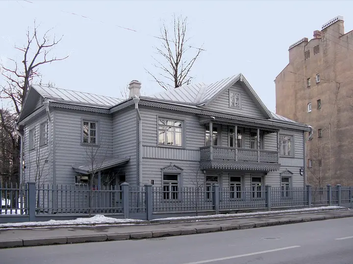

Фото: MaryannaNesina, CC BY 3.0 · Wikimedia Commons
Дом-музей · Петроградская сторона
Музей петербургского авангарда (Дом Матюшина)
Деревянный дом среди каменной Петроградки, где в 1912 году Матюшин устроил штаб авангарда; мемориальные комнаты с работами его круга и Елены Гуро.
- ₽ · до 1 500 ₽ на человека
- Новое в каталоге
- в 1 плане
Позвать сюда: Музей петербургского авангарда (Дом Матюшина)Открыть в каталоге: Музей петербургского авангарда (Дом Матюшина)Маршрут до места: Музей петербургского авангарда (Дом Матюшина)
Адрес и детали
- Адрес
- ул. Профессора Попова, 10
Открыть на Яндекс Картах (в новой вкладке) - Метро
- м. Петроградская
- Цена
- до 1 500 ₽ на человека
- Проверено
- работает — проверили в ноябре 2026
Планы с этим местом 1
- Дом Лидваля · Доходный дом, северный модерн · м. Горьковская
- 19 минут пешкомДом с башнями · Доходный дом-«замок»
- 10 минут пешкомМузей петербургского авангарда (Дом Матюшина) · Дом-музей
Совы и пауки дома Лидваля, замок с башнями на площади Толстого и деревянный дом Матюшина среди камня.
Открыть план: Модерн ПетроградкиПозвать сюда: Модерн Петроградки
Фото: Wolfgang Moroder, CC BY-SA 3.0 · Wikimedia Commons

Похожие рядом

Что ещё рядом


Как позвать
- Выбери план, место или событие — в карточке адрес, цены и маршрут в Яндекс Картах.
- Нажми «Позвать сюда» — соберётся приглашение-игра для свидания или голосование для компании.
- Отправь ссылку в любой мессенджер: тебе ответят, а компания отметит, куда и когда может. Бесплатно и без регистрации.